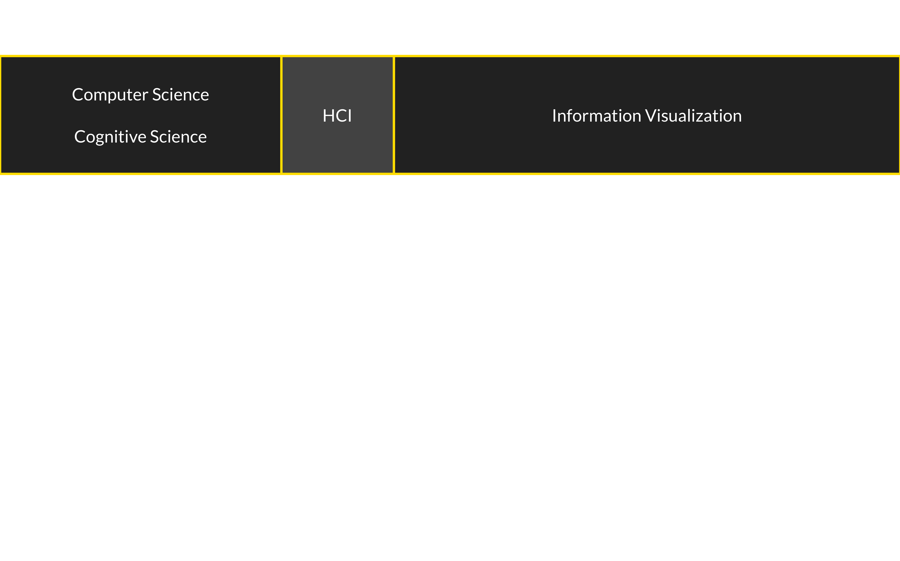
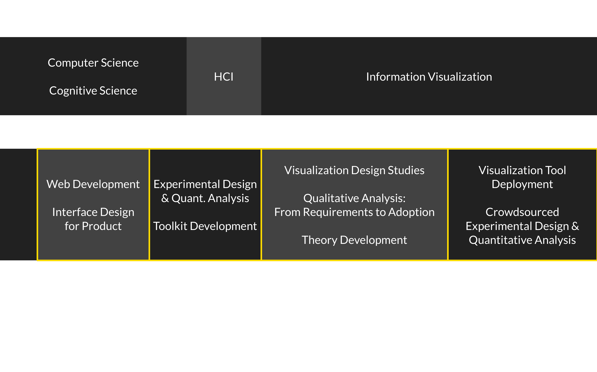

Constraints and Opportunities for
Expressive Information Design
Matthew Brehmer · Microsoft Research · @mattbrehmer
 Presentation at SFU SIAT 2019-01-28 · slides: aka.ms/siat1901
Presentation at SFU SIAT 2019-01-28 · slides: aka.ms/siat1901
Outline
· What is expressive information design?
· My background, methods, and values
· Focus section 1: Considerations and tools for expressive information design
· Focus section 2: Expressive information design for mobile devices
· Ongoing and future research
· Why SIAT?
Scope
Considerations and tools for expressive information design:
· Timeline Storyteller C7, DataToon C8, Charticulator J7, ChartAccent C5, Timelines Revisited J6, TimeLineCurator J4
Visualization task analysis:
· A Typology of Abstract Visualization Tasks J1, Visualizing Dimensionally-Reduced Data W3
Evaluating ________ :
· Data-Driven Stories BC1, Visualization Authoring Systems W5, Variants of Multi-Series Bar Charts C6,
· Overview: A Document Mining Tool for Journalists J2
Visualization for mobile devices:
· Ranges Over Time J8, Animation vs. Small Multiples WP*
Visualization for resource conservation:
· Workflows for Energy Portfolio Analysis J5 Publications by chronology and type as in mattbrehmer.github.io/mb_cv.pdf | WP* = working paper.
Scope
Considerations and tools for expressive information design:
· Timeline Storyteller C7, DataToon C8, Charticulator J7, ChartAccent C5, Timelines Revisited J6, TimeLineCurator J4
Visualization task analysis:
· A Typology of Abstract Visualization Tasks J1, Visualizing Dimensionally-Reduced Data W3
Evaluating ________ :
· Data-Driven Stories BC1, Visualization Authoring Systems W5, Variants of Multi-Series Bar Charts C6,
· Overview: A Document Mining Tool for Journalists J2
Visualization for mobile devices:
· Ranges Over Time J8, Animation vs. Small Multiples WP*
Visualization for resource conservation:
· Workflows for Energy Portfolio Analysis J5 Publications by chronology and type as in mattbrehmer.github.io/mb_cv.pdf | WP* = working paper.
Scope
Considerations and tools for expressive information design:
· Timeline Storyteller C7, DataToon C8, Charticulator J7, ChartAccent C5, Timelines Revisited J6, TimeLineCurator J4
Visualization task analysis:
· A Typology of Abstract Visualization Tasks J1, Visualizing Dimensionally-Reduced Data W3
Evaluating ________ :
· Data-Driven Stories BC1, Visualization Authoring Systems W5, Variants of Multi-Series Bar Charts C6,
· Overview: A Document Mining Tool for Journalists J2
Visualization for mobile devices:
· Ranges Over Time J8, Animation vs. Small Multiples WP*
Visualization for resource conservation:
· Workflows for Energy Portfolio Analysis J5 Publications by chronology and type as in mattbrehmer.github.io/mb_cv.pdf | WP* = working paper.
What is Expressive Information Design?
From the perspective of an information visualization researcher.
What is Expressive Information Design?
· Combining visualization, annotation, and explanation to present information to an audience.
· Thinking systematically about tasks, design choices, and constraints.
· Identifying ways to assess alternative design choices.
Presenting Information to the Public
e.g., Hans Rosling's TED presentations about global economic and public health indicators.
Image: Open Knowledge Foundation Deutschland (flickr, cc by).
Presenting Information to the Individual
Information that is personally-relevant and appropriate for the context.
e.g., Mobile news; apps for tracking personal activity, health, finance, ... Image: newkemall (flickr, cc by).
Aspects of Expressive Information Design
Thinking systematically about tasks, design choices, and constraints.
Thinking Systematically about Tasks
A Multi-Level Typology of Abstract Visualization Tasks. Brehmer and Munzner.
In IEEE Transactions on Visualization and Computer Graphics (VIS 2013, InfoVis Track).
 Icons by Eamonn Maguire (cc by) for Munzner's Visualization Analysis & Design (CRC Press, 2014).
Icons by Eamonn Maguire (cc by) for Munzner's Visualization Analysis & Design (CRC Press, 2014).
Thinking Systematically about Tasks
A Multi-Level Typology of Abstract Visualization Tasks. Brehmer and Munzner.
In IEEE Transactions on Visualization and Computer Graphics (VIS 2013, InfoVis Track).
The most cited IEEE InfoVis paper since 2013, with more than 280 citations*.
 * Google Scholar, Jan 2019.
* Google Scholar, Jan 2019.Icons by Eamonn Maguire (cc by) for Munzner's Visualization Analysis & Design (CRC Press, 2014).
Thinking Systematically about Design Choices
Identifying the dimensions of design spaces that characterize...
... ways to visually represent data,
... ways to interact with these representations,
... ways to highlight and annotate them, and
... ways to combine visual content with textual explanation.
In an expressive information design tool, how do you present these choices?
Constraints on Expressivity
Constraints imposed by authors, and those imposed by the context or the audience.
Expertise. e.g., empowering non-programmers and non-designers.
Resources. e.g., enabling expressive information design for those on a deadline.
Context. e.g., anticipating the visual and data literacy of the audience,
Or anticipating the device that the audience will use.
My Background, Methods, & Values
My Background
My Background
The Value of Democratizing Information Design
How can I enable under-served groups of people to...
Expressively visualize their data?
Present compelling data-driven stories?
Make personal decisions grounded in data?
The Value of Democratizing Information Design
Situating my research within the academic visualization community.
Applications of visualization beyond those in professional data analysis.
e.g., Why are journalists and educators presenting information using business intelligence tools?
e.g., What are the best practices for the visual display of personal information on a phone?
The Value of Connecting Research & Practice
Disseminating visualization research into practice, and vice versa.
Promoting and studying the adoption of deployed information design tools and research prototypes.
Collecting examples of information design produced by practitioners.
Fostering a dialogue between researchers and practitioners (e.g., OpenVisConf, VisInPractice)*. * OpenVisConf: openvisconf.com | VisInPractice speaker series at IEEE VIS: VisInPractice.github.io.
Outline
· What is expressive information design?
· My background, methods, and values
· Focus section 1: Considerations and tools for expressive information design
· Focus section 2: Expressive information design for mobile devices
· Ongoing and future research
· Why SIAT?
The Daily Routines of Famous Creative People
Story inspired by infographics by Podio and info we trust.Data source: Daily Rituals: How Artists Work by Mason Currey (2013)
Expressive Information Design with Timelines
Timeline Storyteller: The Design & Deployment of an Interactive Authoring Tool for
Expressive Timeline Narratives.
Brehmer, Lee, Riche, Tittsworth, Lytvynets, Edge, and White. In Proc. Computation + Journalism 2019.

timelinestoryteller.com | github.com/Microsoft/timelinestoryteller
Timelines Revisited
Timelines Revisited: A Design Space and Considerations for Expressive Storytelling.
Brehmer, Lee, Bach, Riche, and Munzner. In IEEE TVCG 2017.
Timelines are visual representations of categorical event sequences.
The visualization research community has focused on their use in data analysis.
How have practitioners used them for storytelling?
How have people drawn timelines over the course of history?
What Happened When?
In what sequence did the events occur?
How long did the events last?
How long between event A and event B?
Did A and B co-occur or repeat?
When did A and B occur relative to event C?
A Timeline Design Space
Timelines Revisited: A Design Space and Considerations for Expressive Storytelling.
Brehmer, Lee, Bach, Riche, and Munzner. In IEEE TVCG 2017.
Representation


Scale


Layout


Research Process
1. I collected and categorized 145 timelines and timeline tools to establish the dimensions.
2. I validated the dimensions of the design space with 118 additional timelines (263 total).
3. I implemented points in the design space with 28 representative datasets. 1. Cartographies of Time (Rosenberg & Grafton),
Visualization of Time-Oriented Data (Aigner et al.), Making Timelines (Groeger), ...
2. visual.ly, the Kantar IIB Showcase, massvis.mit.edu, ...
3. Survey data and dataset index can be found at timelinesrevisited.github.io.
timeline designs at timelinesrevisited.github.io
 Image: a visual index of points in the timeline design space.
Image: a visual index of points in the timeline design space.
timeline designs at timelinesrevisited.github.io
 Image: a visual index of points in our timeline design space.
Image: a visual index of points in our timeline design space.
Using our Timeline Design Space
Image: a visual index of points in our timeline design space.
Expressive Storytelling with Timelines
Provide alternative representations for time, and
Provide alternative time scales.
Anticipate chronological or non-chronological narratives.
Incrementally reveal visual elements, selectively highlighting and annotating to direct attention.
Timeline Storyteller
Produce visually expressive timeline narratives in the browser or in Microsoft Power BI.

timelinestoryteller.com Timeline Storyteller: The Design & Deployment of an Interactive Authoring Tool for Expressive Timeline Narratives. Brehmer, Lee, Riche, Tittsworth, Lytvynets, Edge, and White.
In Proc. 2019 Computation + Journalism Symp.
The Daily Routines of Famous Creative People
Story inspired by infographics by Podio and info we trust.Data source: Daily Rituals: How Artists Work by Mason Currey (2013)
Evaluating Timeline Storyteller
A laboratory study to assess expressivity seemed to be inappropriate.
Can I better understand how people use it with their own data?
How does the content they produce reflect my timeline design space?
Promoting Timeline Storyteller
I demonstrated it at the 2017 Tapestry Conference and at OpenVisConf 2017.
Meanwhile, my collaborator (Chris White) used it in his keynote at the 2017 Dublin Data Summit,
And Microsoft's Data Journalism Team demonstrated it at the 2017 Future of Storytelling Summit.
I wrote about it on the official Power BI Blog, and along with the Data Journalism Team
I produced a tutorial and interview for the Power BI YouTube channel.
Promoting Timeline Storyteller (cont.)
 A customer demonstrated it in the opening keynote of the 2017 Data Insights Summit.
A customer demonstrated it in the opening keynote of the 2017 Data Insights Summit.
Timeline Storyteller: Collecting Usage Data
I collected entries from a data storytelling contest held with the Power BI user community.
I collected exported content from the web version, and
I tracked download metrics of the Power BI desktop version.
Timeline Storyteller: Contest Winners

 [L] Tropical Cyclones by Manga Solutions (2017).
[L] Tropical Cyclones by Manga Solutions (2017).
[R] TV Network Ratings by Pragmatic Works (2017).
Timeline Storyteller: Content Analysis
I examined exported content from the web version (subject to author consent).
This resulted in a corpus of 223 unique artifacts,
Which spanned my timeline design space (with a couple of exceptions),
Though the Linear representation and Chronological scale were most common.
Timeline Storyteller: Usage Metrics*
Over 36,000 downloads of the Power BI version.
Over 51,000 views of our YouTube tutorial.
Over 150 stars of Github repository. * As of Jan 2019.
I'm tracking issues at: github.com/Microsoft/timelinestoryteller | timelinestoryteller@microsoft.com
Timeline Storyteller: Lessons Learned
You can never have enough tutorial content and design inspiration.
I could recommend design choices and annotations.
The viewing experience ought to be more responsive. Timeline Storyteller: The Design & Deployment of an Interactive Authoring Tool for Expressive Timeline Narratives. Brehmer, Lee, Riche, Tittsworth, Lytvynets, Edge, and White.
In Proc. 2019 Computation + Journalism Symp.
Other Expressive Information Design Tools


 I also contributed to the ChartAccent, DataToon, & Charticulator projects.
ChartAccent: Annotation for Data-Driven Storytelling.
I also contributed to the ChartAccent, DataToon, & Charticulator projects.
ChartAccent: Annotation for Data-Driven Storytelling. Ren, Brehmer, Lee, Hllerer, and Choe. In Proc. 2017 IEEE PacificVis Symp. chartaccent.github.io
DataToon: Drawing Dynamic Network Comics With Pen + Touch Interaction.
Kim, Riche, Bach, Xu, Brehmer, Hinckley, Pahud, Xia, McGuffin, and Pfister. In Proc. ACM CHI 2019.
Charticulator: Interactive Construction of Bespoke Chart Layouts.
Ren, Brehmer, and Lee. In IEEE TVCG (VIS 2018, InfoVis Track). charticulator.com.
Evaluating Data-Driven Stories
 We catalog relevant perspectives, criteria, methods, and metrics for evaluating data-driven stories.
Chapter 11: Evaluating Data-Driven Stories & Storytelling Tools.
We catalog relevant perspectives, criteria, methods, and metrics for evaluating data-driven stories.
Chapter 11: Evaluating Data-Driven Stories & Storytelling Tools. Amini*, Brehmer* (equal contribution), Bolduan, Elmer, and Wiederkehr.
In Data-Driven Storytelling (CRC Press, 2018)
Outline
Why Visualization?
Why Expressivity? What are the Constraints?
Why Me?
Focus Section 1: Supporting Expressive Information Design
Focus Section 2: Expressive Information Design for Mobile Devices
Ongoing Work and Future Research Program
Why SIAT?
Focus Section 2
Expressive Information Design for Mobile Devices


 Data Visualization on Mobile Devices.
Data Visualization on Mobile Devices. Lee, Brehmer, Isenberg, Choe, Langer, and Dachselt.
In Extended Abstract Proc. 2019 ACM CHI Conf.
Visualizing Ranges over Time on Mobile Phones: A Task-Based Crowdsourced Evaluation.
Brehmer, Lee, Isenberg, and Choe. In IEEE TVCG (VIS 2018, InfoVis Track).
Too Small for Multiples? Animated vs. Faceted Trend Visualization on Mobile Phones.
Brehmer, Lee, Isenberg, and Choe. arXiv (cs.HC) preprint, Jan. 2019.
Visualizing Ranges Over Time on Mobile Phones
 Visualizing Ranges over Time on Mobile Phones: A Task-Based Crowdsourced Evaluation.
Visualizing Ranges over Time on Mobile Phones: A Task-Based Crowdsourced Evaluation. Brehmer, Lee, Isenberg, and Choe. In IEEE TVCG (VIS 2018, InfoVis Track).
 Image: Eric Boam's 7 Months of Sleep.
Image: Eric Boam's 7 Months of Sleep.
 Images (clockwise from left): The New York Times · Eric Boam · Randy Olson.
Images (clockwise from left): The New York Times · Eric Boam · Randy Olson.
Ranges in Weather Apps
 Apps: Dark Sky · Weathertron · Weather Line .
Apps: Dark Sky · Weathertron · Weather Line .
Ranges in Sleep Tracking Apps
 Apps: Azumio Sleep Time · Garmin Connect · Bedtime (iOS Clock) .
Apps: Azumio Sleep Time · Garmin Connect · Bedtime (iOS Clock) .
Ranges and Radial Representations

 Images: Weather Radials (by Timm Kekeritz) · The Book of Circles (Manuel Lima, 2017).
Images: Weather Radials (by Timm Kekeritz) · The Book of Circles (Manuel Lima, 2017).
 Images: mobileinfovis.com (by Sebastian Sadowski, 2018).
Images: mobileinfovis.com (by Sebastian Sadowski, 2018).
A Crowdsourced Experiment on Mobile Phones
Image: flickr/newkemall (cc by).
Experimental Tasks
Locate Dates
Read Values
Locate Extreme Values
Compare Values
Compare Ranges
Tasks derived from A Multi-Level Typology of Abstract Visualization Tasks. Brehmer and Munzner.In IEEE Transactions on Visualization and Computer Graphics (TVCG, VIS 2013, InfoVis Track).
Dependent Measures
For each trial:
Trial completion time
Response accuracy
At each level of granularity:
Preference: Linear or Radial
Confidence: Low (1) to High (5)
Icons: fontawesome.com.Participants
Temperature (N = 40), Sleep (N = 47)
84 trials per participant, 20 - 25 minutes to complete full experiment
Icons: fontawesome.com.Radial or Linear?
People are, in general, slower with radial representations.
Only in some data + task contexts are people less accurate with a radial representation
(i.e., reading and locating values in the absence of seasonal variation).
People prefer (and are more confident with) linear representations
For complete inferential statistics for each task, see the paper:Visualizing Ranges over Time on Mobile Phones: A Task-Based Crowdsourced Evaluation.
Brehmer, Lee, Isenberg, and Choe. In IEEE TVCG (VIS 2018, InfoVis Track).
Week vs. Month vs. Year
People are typically slower with a month than with a week of ranges.
For some tasks, people were less accurate with a month than with a year.
The seasonal variation in annual temperature appears to be beneficial for locating extreme values.
For complete inferential statistics for each task, see the paper:Visualizing Ranges over Time on Mobile Phones: A Task-Based Crowdsourced Evaluation.
Brehmer, Lee, Isenberg, and Choe. In IEEE TVCG (VIS 2018, InfoVis Track).

Selecting an Appropriate
Representation and Granularity
Is a cycle meaningful in the context of the data?
Is the task involve locating values? Or comparing them?
Is efficiency the primary consideration?
Locating values quickly? Choose Linear.
Comparing values (and unconcerned with speed)? Choose Radial or Linear.
Visualizing Ranges Over Time on Mobile Phones
(mobile only) experimental app: aka.ms/ranges
code: github.com/microsoft/RangesOnMobile
blog post: medium.com/multiple-views-visualization-research-explained Visualizing Ranges over Time on Mobile Phones: A Task-Based Crowdsourced Evaluation.
Brehmer, Lee, Isenberg, and Choe. In IEEE TVCG (VIS 2018, InfoVis Track).
Visualization for Mobile Devices, Continued:
Animation vs. Small Multiples for Trend Visualization
A Comparative Evaluation of Animation and Small MultiplesFor Trend Visualization on Mobile Phones.
Brehmer, Lee, Isenberg, and Choe. arXiv (cs.HC) preprint, Jan. 2019.
Outline
Why Visualization?
Why Expressivity? What are the Constraints?
Why Me?
Focus Section 1: Supporting Expressive Information Design
Focus Section 2: Expressive Information Design for Mobile Devices
Ongoing Work and Future Research Program
Why SIAT?
Expressive Information Design
with Pen + Touch Interaction
I envision performative and whimsical approaches to data-driven storytelling. Images L to R: narrative diagram by Kurt Vonnegut, a "board game" timeline, a timeline by Mark Twain, a custom curve timeline in Timeline Storyteller.
Visualization for Mobile Phones
I will test alternative multidimensional glyph designs for activity tracking. Images CW from top left: StressScan, Clue, FitBit Surge, Activity, Sleep++, Daily Goals.
Early stage work with Lee, Isenberg, and Choe.
Visualization for Mobile Phones
I am designing discoverable interactions for navigating time-varying data. Work in progress with Lee, Collins, and Hinckley.
Opportunities for Expressive Information Design
A Research Program
Democratizing Data Visualization
I will strive to support those without programming expertise, design expertise, and other resources,
Such as small or local newsrooms, educators, cultural institutions, and curators of digital collections.
Expressive Information Design & Emerging Technology
I will think beyond the mouse and keyboard and consider multimodal human-information interaction,
Such as with mobile, pen + touch, wearable, and mixed reality devices,
While ensuring that these interactions are discoverable, useful, and enjoyable.
Expressive Information Design and
The Attention Economy
I will design inviting, engaging, and memorable techniques for use in data-driven storytelling,
Which can be used to produce stories that are personally-relevant to the viewer,
While identifying, testing, and disseminating expressive information design patterns along the way.
Expressive Information Design to Boost Graphicacy
I will design and test techniques that aim to improve visual / data / statistical literacy / graphicacy*,
From annotation and textual explanation to juxtaposing complementary visual representations,
With a particular focus on communicating uncertainty in data. * Uncertainty, graphicacy, and the power of statistics.
Alberto Cairo (Oct 18, 2017), thefunctionalart.com.
Expressive Information Design for Decision Support
I will design and test techniques that aim to help people make better decisions grounded in data,
Such as decisions about health, finance, civic engagement, and resource conservation,
While considering the context and device in which this information manifests.
Outline
Why Visualization?
Why Expressivity? What are the Constraints?
Why Me?
Focus Section 1: Supporting Expressive Information Design
Focus Section 2: Expressive Information Design for Mobile Devices
Ongoing Work and Future Research Program
Why SIAT?
Why SIAT?
The students are trained in information design, visual communication design, and interaction design.
There is potential to collaborate on projects on resource conservation, health, and cultural heritage.
Cascadia (Vancouver, Victoria, Seattle) is the world's best place to do visualization research.
It is the ideal place to establish an Expressive Information Design group.
Constraints and Opportunities for
Expressive Information Design
Matthew Brehmer · Microsoft Research · @mattbrehmer
slides: aka.ms/siat1901
Presentation at SFU SIAT 2019-01-28